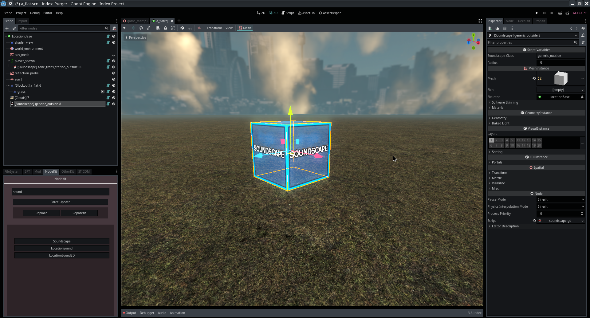
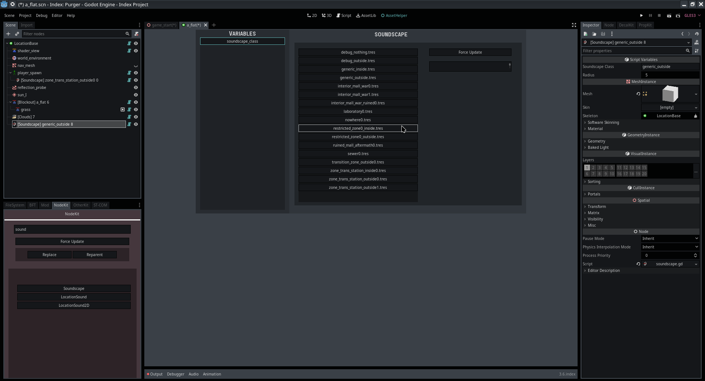
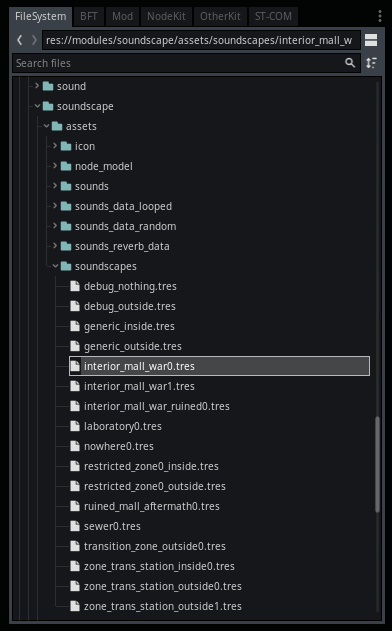
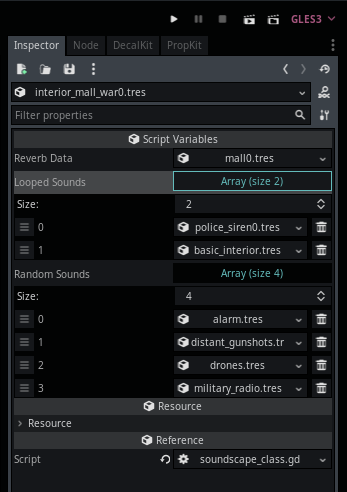

Module: soundscape
Documentation last edited: October 23, 2025 at 14:33 UTC
Description
So, what are "soundscapes"? It's basically a fancier word for ambience. In this project, "soundscapes" are just a way to structure data for ambience. That includes looped audio samples *and* audio samples that are played randomly throughout the game. Different soundscapes can be used for different environments, interiors, exteriors, outer worlds, out in the skies, etc. You can make anything with it, really... As long as you have any experience in sound design, you are free to do anything you wish.


This documentation page reads too normal and I need to find a way to fuck this up... Oh wait, I just did. Anyways...
Creating your own soundscape
All soundscapes are stored at
"res://modules/soundscape/assets/soundscapes/"
as
SoundscapeClass
.

SoundscapeClass
has all the info you need, which are... Reverb data, an array of looped samples and an array of random samples. Reverb data is just a preset for reverberation/delay settings. Arrays should be self-explanatory.

"res://modules/soundscape/assets/sounds_reverb_data/"
contains
SoundscapeReverbData
resource files that are configuring earlier mentioned reverberation and delay.
"res://modules/soundscape/assets/sounds_data_looped/"
contains
SoundscapeLoopedSound
resource files that configure the looped sample, which is all about the audio sample, volume, pitch, inspiration value, tech debt...
"res://modules/soundscape/assets/sounds_data_random/"
contains
SoundscapeRandomSounds
resource files that configure a set of random samples, which is all about the audio samples themselves, min/max volume, min/max pitch, location of the lizard people...
All
Soundscape
nodes contain a class name of the soundscape to play, which is just a file name of the
SoundscapeClass
resource stored at
"res://modules/soundscape/assets/soundscapes/"
. You just create a node, assign the soundscape name, and enjoy the ambience of your personal hellish temple.
General Information
Root directories list
assets, docs, src
Nodes
Classes
None
Resources
SoundscapeClass
SoundscapeRandomSounds
SoundscapeLoopedSound
SoundscapeReverbData
Other Scripts
None